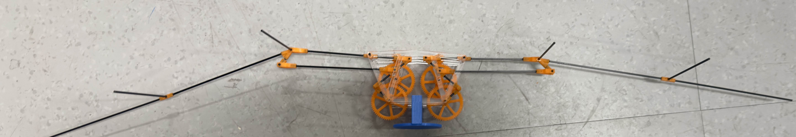

Nak-seung Patrick Hyun Research Program: Translational Ornithopter
Deliverables
Premise
Under the advising of Dr. Nak-seung Patrick Hyun and in collaboration with Andrew Hadikusumo and Darin Tsai,
a biomimetic translational ornithopter robot was in development until May 2025. This robot was intended to be used to
understand how flying animals, especially birds, are able to control their flight dynamics through asymmetric wing flapping.
Such studies would provide further insight into how we can optimize aerodynamic performance in certain aerial vehicles.
Development
Mechanical Specifications

This translational ornithopter features an acryllic frame created through laser cutting, gears and connectors manufactured via stereolithography, and carbon fiber shafts and linkage rods.
The wing membranes (not pictured) are made of a thin PET sheet. Each wing was separately driven by its own motor, creating a unique advantage for this robot that allows it to asymmetrically
flap at different frequencies. Such an asymmetry in flapping would have theoretically given the ornithopter control over greater degrees of freedom than most other prominent ornithopters.
Without motors, the ornithopter assembly weighed in at around 18 grams in its later iterations. The peak flapping frequency deemed safe for the robot was between 9-10 Hz; anything higher
would cause the linkage connectors to structurally fail. Even at peak flapping frequency, the robot was only able to produce about 0.2 N of lift force, meaning its thrust-to-weight ratio
was still less than 1 in its final iteration.
Computational Aspects
The most important outcome of the project initially was to determine how to optimize the wing linkage lengths to maximize the lift generated.
Because the wing is generating negative lift during its upstroke, this creates a complex aerodynamics issue that requires
thorough simulation to understand. The commonly agreed upon method to reduce negative lift generation is to fold the wings inwards
during the upstroke to decrease the effective wing area and aspect ratio (for which coefficient of lift is proportional to)
such that the negative lift generation is minimized while unfolding the wing completely during the downstroke in order to
generate as much positive lift as possible.
Since this particular robot is powered by a crank-and-rocker mechanism, the movement of the wing tips is periodic but difficult
to interpret mathematically despite its closed-loop nature. By exporting kinematic data from the SolidWorks top-level assembly,
we can then use this data to simulate wing tip movement in Ptera Software via the unsteady vortex lattice method to determine the lift coefficient over time.
Outcomes
Due to the departure of key project members, the project was ultimately discontinued before a relationship between the linkage lengths and lift generated could be rigorously proven.
Optimization studies done by Darin Tsai and Ptera Software simulations conducted by me supported the notion that minimizing the crank linkage length would maximize lift for this robot
design, but it was never thoroughly tested.
A similar ornithopter project, acting as a spiritual successor to this one, will be developed during the 2025-26 academic year to provide insight through biomimicry into how birds are
able to leverage wind disturbances to minimize energy lost in flight.

 Due to the departure of key project members, the project was ultimately discontinued before a relationship between the linkage lengths and lift generated could be rigorously proven.
Optimization studies done by Darin Tsai and Ptera Software simulations conducted by me supported the notion that minimizing the crank linkage length would maximize lift for this robot
design, but it was never thoroughly tested.
Due to the departure of key project members, the project was ultimately discontinued before a relationship between the linkage lengths and lift generated could be rigorously proven.
Optimization studies done by Darin Tsai and Ptera Software simulations conducted by me supported the notion that minimizing the crank linkage length would maximize lift for this robot
design, but it was never thoroughly tested.